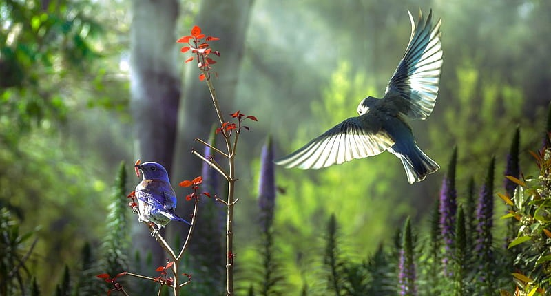
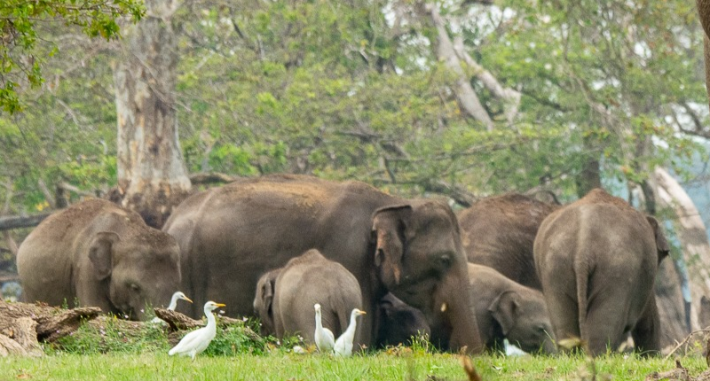

Birds of Paradise
Sri Lanka, celebrated as a biodiversity hotspot, boasts a diverse and rich avifauna. The island is a sanctuary for a multitude of bird species, ranging from endemic wonders like the Sri Lanka Junglefowl and Blue Magpie to seasonal migrants seeking refuge in coastal areas such as Bundala National Park and Kumana National Park. The country's varied landscapes, including lush rainforests, highlands, wetlands, and coastal regions, contribute to its status as a biodiversity hotspot. Noteworthy conservation efforts are underway, as highlighted by designated Important Bird Areas like Sinharaja Forest Reserve and Horton Plains National Park. Despite its ornithological richness, Sri Lanka faces challenges such as habitat loss and climate change, prompting ongoing conservation initiatives. Bird enthusiasts are drawn to the island's popularity as a bird-watching destination, with numerous national parks providing excellent opportunities for spotting notable species like the Sri Lanka Frogmouth and Crimson-fronted Barbet. To delve deeper into the world of Sri Lankan birds, interested individuals are encouraged to consult field guides and connect with local birding organizations for updated insights and prime bird-watching locations.
Enchanting Ecotourism
Sri Lanka's diverse forests, ranging from lush rainforests to dry zone habitats, showcase an unparalleled beauty rooted in their rich biodiversity and distinctive landscapes. Renowned for high endemism, these forests harbor unique species, such as the iconic Sri Lanka Junglefowl and the endemic orchids in the Sinharaja Forest Reserve. The enchanting Sinharaja rainforest, with its towering trees and vibrant avian life, exemplifies the captivating allure of Sri Lanka's landscapes. From mist-covered highland forests like those in Horton Plains National Park to ancient sacred sites like Ritigala, each locale adds a layer of mystique to the country's natural splendor. Beyond their aesthetic appeal, these forests serve as vital habitats for diverse wildlife, including elephants and leopards in sanctuaries like Yala and Wilpattu National Parks. Preserving this beauty is imperative, prompting ongoing conservation efforts, ecotourism initiatives, and sustainable practices that contribute to the enduring magnificence of Sri Lanka's forests and their unique ecosystems.
Guardians of Heritage
The Sri Lankan elephant, a subspecies of the Asian elephant, symbolizes the rich biodiversity and cultural heritage of the island nation. Recognized as the largest and darkest of its kind, with distinct long and slender tusks, these intelligent and social creatures inhabit diverse ecosystems, from dense forests to open grasslands. Revered in folklore and religious ceremonies, the Sri Lankan elephant holds cultural significance, symbolizing strength, wisdom, and prosperity. However, it faces threats such as habitat loss, human-elephant conflicts, and illegal poaching. Conservation initiatives aim to protect their habitats and ensure their long-term survival, highlighting the delicate balance between human needs and preserving Sri Lanka's natural heritage.
Ecological Marvels
- Sinharaja Forest Reserve
- Sri Lanka Purple-faced Langur
- Green Pit Viper
- Layard's Parakeet
- Knuckles Mountain Range
- Dusky-stripped Jungle Squirrel
- Hump-nosed Lizard
- Ceylon Slender Loris
- Horton Plains National Park
- Sambar Deer
- Highland Frog
- Yellow-eared Bulbul